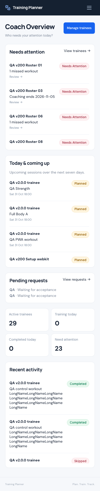
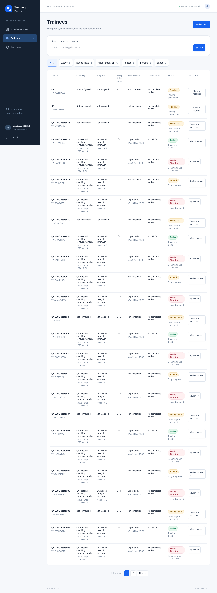
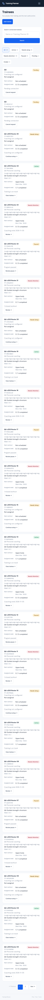
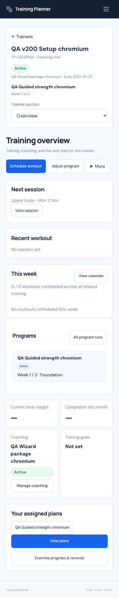
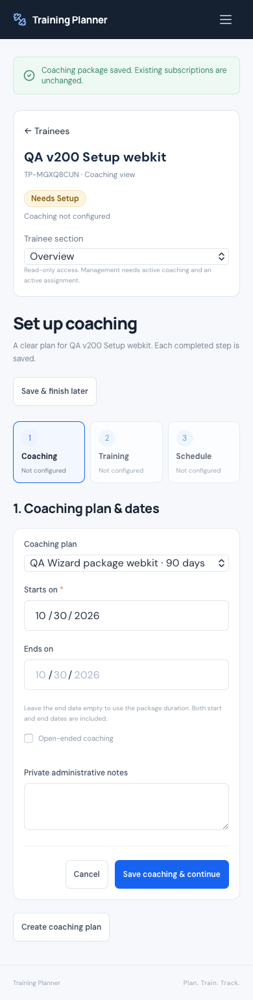
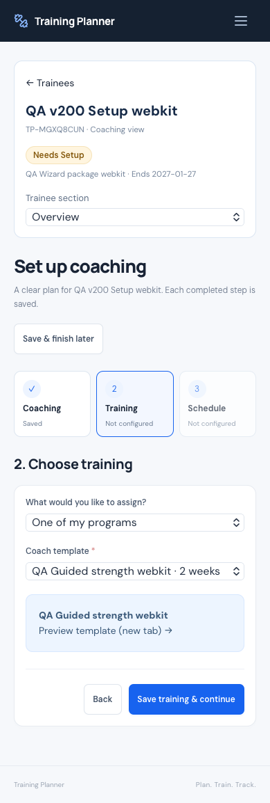
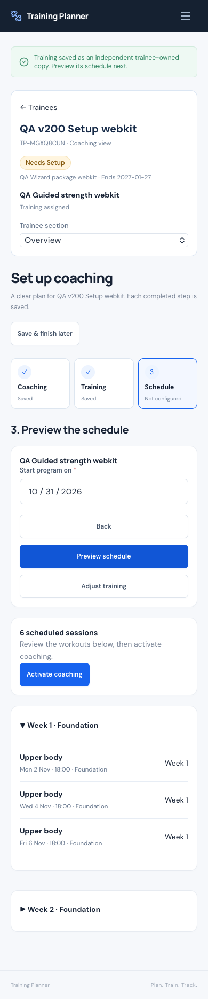

Report contents · 63 sections
1 / 63
Baseline
Built on accepted v2.2.0 source 1f1122844a9c2ce8bb397aa4b6a19d6a09efe170. Starting main was 2c3fcc5c6665ae6728b98567f87f8e5a08db442a; its difference from the v2.2 tag was documentation evidence. The Laravel / Inertia / React monolith, authentication, user ownership, Personal Workspace, program lifecycle and v2.2 PWA source remain in place.
Before implementation, the existing SQLite suite passed 552 tests / 11,069 assertions. Existing JavaScript tests and the frontend build also passed. This is an extension of the current application, not a replacement.
2 / 63
Deployment state
SOURCE RELEASE ONLY — PRODUCTION REMAINS v2.1.1. The v2.3 brief explicitly requires a later “deploy” request. That hold supersedes the older standing auto-deploy instruction. v2.2 was not deployed separately; no v2.3 upload, production migration, VAPID generation or cron change occurred.
A fresh read-only GET of the live login shell and its two compiled assets matched the previously deployed immutable v2.1.1 archive. This confirms the public asset baseline; it is not a fresh server-wide source/database audit. Read-only production evidence.
3 / 63
Existing Coach UX audit
The working domain boundaries were sound, but the workflow was fragmented. Subscription administration, template assignment and schedule creation required moving across modules; the roster did not provide a strong operational table, and trainee context was too easy to lose.
| Area | Before | v2.3 response |
|---|---|---|
| Roster | Coaching relationships without a focused daily-management table | Real desktop table, mobile cards, status and next action |
| Activation | Separate coaching, assignment and scheduling routes | Three saved steps on one setup screen |
| Scheduling | Coach had to reconstruct context across modules | Schedule workout and preview inside the selected trainee |
| Monitoring | Repeated navigation and limited action cues | Persistent trainee identity and shared section navigation |
4 / 63
User-reported pain points
| Finding | Resolution |
|---|---|
| UX-COACH-01 · Trainee management is hard to scan | Eight operational table columns; mobile cards; search, filters and pagination |
| UX-COACH-02 · Activation is unclear | Coaching → Training → Schedule, a saved checklist and explicit activation |
| UX-COACH-03 · Scheduling is confusing | Trainee-context quick scheduling and a human-readable first schedule preview |
| UX-COACH-04 · Overall flow is fragmented | Overview prioritizes attention; all trainee tools retain identity and back navigation |
5 / 63
New information architecture
Coach Overview → Trainees → one trainee console → Overview / Program / Calendar / History / Progress. Reusable Programs remain a separate template library. Coaching administration is a secondary account-menu destination.
New trainee: Add trainee → request accepted → Continue setup → Coaching → Training → Schedule preview → Activate coaching → trainee overview. Existing trainees keep their relationships, subscriptions, assignments and workout data.
6 / 63
Coach navigation
The primary Coach sidebar now contains Coach Overview, Trainees and Programs. The account menu retains Coaching administration and shared settings. Personal Workspace keeps its existing navigation. Older routes remain available; this change does not strand bookmarks or rewrite authentication.
7 / 63
Coach Overview
Needs attention, today/upcoming sessions and pending requests lead the page. Supporting counts show active connected trainees, trainees training today, completed workouts today and trainees needing attention. Recent completed/skipped activity remains available below the operational cards. Lists are bounded and scrollable.

8 / 63
Needs Attention
Attention is derived from current records: missed assigned workouts, coaching ending within seven days, no upcoming assigned workout, ended programs, paused coaching/programs and incomplete setup. The first useful reason and destination are shown. There is no new status table, notification inbox, inferred health score or reminder engine.
Skipped, rest, held and already-started sessions do not become missed-workout alerts. Ended/disconnected relationships do not expose monitoring data. The seven-day ending-soon threshold has one definition in CoachWorkspaceSummary::ENDING_SOON_DAYS.
9 / 63
Today / upcoming trainees
The overview loads at most 12 upcoming sessions through the existing schedule scopes, ordered by calendar date, time and ID, over the next seven days. Each links directly into the correct trainee’s session. Active workouts are excluded from “upcoming”; skipped sessions do not inflate “Training today.” Recent activity is limited to eight records.
10 / 63
Trainees table
Desktop uses a semantic table with Trainee, Coaching, Program, Assigned this week, Next workout, Last workout, Status and Next action. Search matches connected trainee name or Training Planner ID. Filters cover All, Active, Needs setup, Needs attention, Paused, Pending and Ended. Pagination is server-side at 25 rows; search/filter values survive pagination.
“Assigned this week” counts this Coach’s selected assignment, not all activity from other plans. Long names wrap/clamp without removing the full DOM text; the program name has a title tooltip.

11 / 63
Mobile trainee cards
Below the desktop-table breakpoint, each trainee becomes a card with identity, coaching, program, upcoming workout, weekly completion, status reason and the next action. There is no compressed eight-column table to drag sideways. Filters wrap and pagination remains reachable.

12 / 63
Trainee status derivation
| Derived state | Current-record rule |
|---|---|
| Pending / Ended | Connection is pending or ended; private coaching details are withheld |
| Paused | Active relationship with paused coaching or paused current program |
| Needs setup | Missing/expired/upcoming coaching, missing assignment or missing first schedule/run |
| Needs attention | Missed assigned workouts, ended program, coaching ending soon or no upcoming assigned workout |
| Active | Setup exists and no earlier attention rule applies |
The current assignment is the newest active assignment whose plan still exists. A program’s current week is the earliest unresolved training week of its newest run. Coaching pause and program pause are shown separately and link to their respective existing controls.
13 / 63
Next Action logic
Needs setup → Continue setup. Paused coaching → Manage coaching. Paused program → existing run controls. Needs attention → trainee overview with the reason and contextual schedule/coaching tools. Active → View trainee. Pending → Cancel request in the existing confirmation dialog; ended → Access ended. The server remains authoritative even if a button is hidden.
14 / 63
Trainee context header
The shared header keeps trainee name, Training Planner ID, coaching state/package and current program visible across supported trainee routes. Back to Trainees always returns to the roster. Desktop section links become one labeled native selector on mobile. Read-only management states are explicitly explained.
The final mobile-control check verified a 48 px selector and 16 px text in Chromium and WebKit at 320 × 480. Control measurements. Workflow screenshots precede the final selector-height and table-column sizing adjustments.
15 / 63
Trainee Overview
The console combines setup progress, next session, recent workout, this week, program-run summaries, completion, body weight, goals and recent records. Schedule workout is primary when management is permitted; Adjust program is secondary. Manage coaching, setup review and disconnect sit under More.
The weekly console explicitly describes “workouts completed across all shared training.” Existing consent permits viewing the trainee’s shared activity; it does not permit editing another Coach’s plans or personal performance.

16 / 63
Trainee Program
Uses the existing Training Plans and structured Program pages, independent copies, program-run cards, future-block editor and lifecycle controls. The shared context header now surrounds those pages. An unfinished setup can be resumed from the Program section. Completed/started/held session protections and frozen prescriptions continue to apply.
17 / 63
Trainee Calendar
Uses the existing Calendar, schedule entry form, drag/drop and recurrence services. Coach routes supply the trainee context; the create form names the trainee. Past, completed, started and otherwise protected sessions keep their existing restrictions. The overview’s weekly rows link to session details rather than introducing a second calendar.
18 / 63
Trainee History
Uses the existing History list, period/status/type filters, default 10-item pagination and details. Trainee identity remains visible through list/detail navigation. No Coach-specific history storage or reconstructed workout data was added.
19 / 63
Trainee Progress
Uses BodyWeightHistory, ExerciseProgress and existing record/chart components. Current completed-session status remains the source of truth; zero/null weights do not become weighted PRs or volume. Coaches can read authorized progress but cannot enter trainee sets, actual weights, completion or body measurements.
20 / 63
Coaching / subscription inside trainee
Manage coaching now opens under the selected trainee. It reuses the same package/start/subscription form components and existing pause/resume/end endpoints. Status, dates, ongoing coaching and ended/expired records are visible in place. Disconnect is secondary and retains its confirmation dialog. The global administration page still works.
21 / 63
Add Trainee flow
Add trainee is a modal from the roster. It uses the existing exact Training Planner ID / QR pairing flow and request endpoint. The sent state remains visible without sending the Coach to another module. Before consent, only existing limited identity/pairing information is available; no broad member search, email lookup, history or performance access was added.
22 / 63
Setup Needed flow
An accepted connection appears as Needs setup until the necessary coaching, assigned training and schedule exist. The trainee overview shows a three-part saved checklist and the missing reason. A connection alone does not create a subscription, assignment or program run.
23 / 63
Guided setup wizard
| Step | What saves | Next decision |
|---|---|---|
| 1 · Coaching | Existing subscription model, package and dates; fixed or ongoing | Continue to training or finish later |
| 2 · Training | An independent trainee-owned simple plan/program via TrainingPlanDuplicator | Review the assigned training before scheduling |
| 3 · Schedule | Existing signed PlanSchedule/ProgramSchedule preview and apply | Activate coaching only after review |
Reusable coaching packages can be created in a modal without leaving setup. Coaches can select a template, inspect it, use the existing custom builder, or finish later. Simple-plan dates follow the newly saved coaching period. No technical ADD/KEEP/REMOVE/PROTECTED panel leads the first activation preview.






24 / 63
Partial setup
Each successful step persists its real domain record immediately. Save & finish later returns to the trainee overview with that progress retained. Canceling package/subscription dialogs does not advance the wizard. No unfinished draft state, shadow subscription or second workflow database was introduced.
25 / 63
Continue setup
The wizard derives the first missing step from the current subscription, active assignment and schedule/run. Returning after a refresh or a later visit reuses the existing records. Existing scheduled training is recognized and directs changes to the normal future-management flow. Paused/expired coaching is explained and managed through its existing controls.
26 / 63
Activate Coaching
Activation reauthorizes inside the existing transaction and locks the plan. The first schedule is created through the current domain service; a repeated activation, including a new request nonce, preserves the existing run/occurrences. Empty simple-plan schedules return a validation error. Stale schedule signatures are rejected before mutation.
Two real PHP processes simultaneously exercising each setup step leave one subscription, one assignment, one run and one occurrence set. “Activate” is a workflow action; it does not create another persisted activation status.
27 / 63
Assignment integration
TrainingPlanDuplicator remains the only copying service. A narrowly scoped resume-setup option returns the existing active assignment under the same lock instead of making duplicates. Normal explicit additional assignments still create a separate trainee-owned copy. Copied media, exercise identity and frozen program data retain their existing behavior.
Setup defers the assignment notification so the normal successful schedule event can communicate the completed setup. Finishing after assignment without scheduling records the existing deduplicated assignment event. Tests cover both paths.
28 / 63
Scheduling integration
ProgramSchedule and PlanSchedule produce and validate previews exactly as before. Setup renders their first schedule in human-readable weeks/dates. Already-scheduled plans use the existing future edit/review interface, retaining signed diffs, protected-session handling, manual exceptions, cancellation markers and recurrence rules.
29 / 63
Quick Schedule
Schedule workout on the trainee overview opens the existing contextual schedule form. The trainee is already selected, eligible own assignments remain enforced, and dates/times are validated on the server. Empty next-session states offer the same action. No separate one-off Coach scheduling engine was added.
30 / 63
Bulk Schedule management
Existing program future-block updates, pause/resume/shift/end previews and simple-plan reconciliation remain the bulk-management tools. Setup does not overwrite a run or silently reapply a schedule. Safety differences appear when making changes to an existing schedule, where the protected/add/keep/remove detail is relevant.
31 / 63
Programs page
The Coach template library supports search and All / Programs / Simple plans filtering, existing create actions, template details and assigned-trainee counts. The underlying TrainingPlan model is reused; only a template-assignment relation and scoped queries were added. Personal plan discovery and editing remain intact.
32 / 63
Assign from Program
Template detail pages offer Assign to trainee. The next screen searches and paginates this Coach’s active connected trainees. A trainee without assigned training enters guided setup with that template selected. A trainee who already has training enters the existing explicit additional-assignment form with the template preselected. This preserves support for multiple independent assignments.
33 / 63
Global subscription page treatment
The existing page remains accessible as Coaching administration in the account menu, for reusable packages and cross-trainee administration. Its forms were extracted into shared components and are reused in trainee-context management and setup. No subscription route or model was removed.
34 / 63
Mobile-first UI
Verified at 320, 360, 375, 390, 430, 768 and 1280 px widths, including the 320 × 480 short-screen case, in both Chromium and WebKit. Layouts use stacked controls, wrapped filters, full-width mobile actions, readable inputs and reachable modal actions. The established layout/sidebar and v2.1.1 overflow fixes remain in place.
The new Coach suite exercises full setup, partial save/resume, contextual navigation, quick scheduling, package creation and coaching controls. Screenshot evidence is from disposable local accounts, not production users.
35 / 63
Accessibility
The roster has a caption, column and row headers; filters expose pressed state; the mobile section selector has a visible label. Shared field labels, validation alerts, modal focus handling and confirmation dialogs are reused. Status always has text as well as color. Existing keyboard/focus regressions and viewport checks pass. This is practical browser verification, not a formal screen-reader conformance certification.
36 / 63
Action hierarchy
The next useful action leads each state: Continue setup, Schedule workout, Review pause or View trainee. Adjustments are secondary. Disconnect and ending controls remain away from the main workflow and require their established confirmations. Initial schedule review speaks in workouts and dates; technical reconciliation details remain in the change-management flow.
37 / 63
Empty states
No trainees → Add trainee. No search/filter matches → adjust search/filter. No assigned training → Continue setup. No upcoming session → Schedule workout when authorized. No activity/history/progress → an honest empty state. No eligible template or coaching package → create with the existing builder/form or save progress and finish later. No invented metrics, workouts or PRs appear.
38 / 63
UX findings
The main problem was workflow fragmentation rather than a missing domain feature. Subscription creation and assignment worked, but their location made activation feel disconnected. The prior summary presentation also made mixed trainee states difficult to compare. On mobile, persistent identity and a single section selector matter more than duplicating every desktop navigation action.
39 / 63
UX fixes
| Before | After |
|---|---|
| Open trainee → global subscriptions → template library → assignment → plan → schedule | Open trainee → three saved setup steps → reviewed activation → trainee console |
| Infer setup from several pages | Saved checklist and explicit missing-step reason |
| Search across scattered cards for status | Desktop operational table / mobile cards with status and next action |
| Lose the trainee context between tools | Shared name, ID, coaching and program header across sections |
| Begin with technical schedule differences | Begin with the proposed workouts; keep safety differences for later changes |
40 / 63
Personal / Coach component reuse
Shared AppLayout, fields, buttons, modals, confirmations, pagination, dates, ProgramWeeks/ProgramRunCards, Calendar, ScheduleEntries, History, Progress and PR components remain authoritative. Subscription/package forms were extracted only because setup, trainee management and global administration need the same behavior. AddTrainee and the existing CoachingUI hold focused UI concerns.
41 / 63
Architecture health
GOOD. No new framework, dependency, migration, alternate router, performance-write path, history model or calendar/program engine. CoachWorkspaceSummary projects current operational state; CoachingSubscriptions centralizes previously inline rules; CoachSetupController coordinates existing services. Domain authorization is still in CoachAccess and TrainingContext, not inferred from UI state.
| Layer | Responsibility |
|---|---|
| React pages | Roster, attention cards, trainee context, saved setup steps |
| CoachWorkspaceSummary | SQL-derived status and bounded hydration |
| CoachingSubscriptions | Shared creation/uniqueness/date rules |
| CoachSetupController | Request validation and existing-service orchestration |
| Existing domain services | Ownership, consent, assignment, previews, lifecycle, history and progress |
42 / 63
Query / performance findings
Measured actual local HTTP rendering with 29 active related trainees, mixed setup/paused/attention states, multiple programs and structured workout history. Timings are local observations, not production guarantees. Roster hydration is limited to its 25-row page; the global overview does not load every trainee’s sets or PR calculations.
| Page | SQL queries | SQL ms | Response ms | Session-set queries |
|---|---|---|---|---|
| /coach | 16 | 110.07 | 148.68 | 0 |
| /coach/trainees | 7 | 91.54 | 104.17 | 0 |
| /coach/trainees/{id} | 36 | 7.86 | 17.43 | 1 |
| /coach/trainees/{id}/calendar | 30 | 5.83 | 10.92 | 0 |
| /coach/training-plans | 5 | 0.86 | 2.88 | 0 |
The shared context and trainee overview reuse one request-local summary. Progress computation remains in the selected trainee’s existing progress service. No speculative index was added. Measurements.
43 / 63
Authorization / security
Existing regression checks cover Coach A vs Coach B, personal-plan protection, consent revocation, ended relationships, subscription boundaries, actual-performance writes and direct-ID access. Setup rechecks relationship/subscription/assignment authorization under existing locks. The final audit also restored the exact expected relationship-ID check when subscription creation moved into the shared service.
Only connected trainees are searchable in the roster; pairing remains exact-ID with limited pre-consent disclosure. Coaches cannot complete workouts or alter actual sets. Trainee self-enabling of Coach Workspace remains disabled. Composer validation and audit pass with no reported advisory or abandoned dependency.
44 / 63
PWA v2.2 regression
The v2.2 source is retained unchanged. Both engines pass the existing 22-check PWA suite: manifest/install settings, real service-worker lifecycle, offline handling, cache boundaries, active-workout/unsaved-form update protection and notification preferences. Setup writes use the existing online request rules.
No VAPID keys, scheduler or production push were configured. Permission/provider scenarios are automated or mocked; no physical-device install or real provider delivery is claimed. WebKit offline navigation used the existing origin-outage proxy workaround for its automation offline-flag limitation.
45 / 63
Bugs found
- SQLite datetime representation made subscription-date summaries and same-day missed-workout comparisons differ from MySQL date values.
- A generic dialog cancel callback could advance a setup step instead of staying in context.
- An empty simple-plan preview could otherwise allow a misleading successful activation.
- Moving subscription creation into a shared service initially omitted the exact expected relationship-ID check.
- A native WebKit mobile selector ignored min-height-only sizing; a narrow desktop column wrapped its heading mid-word.
46 / 63
Bugs fixed
- Calendar-date SQL comparisons normalize subscription dates and use whereDate for existing past-session scope. Focused SQLite/MySQL tests include elapsed sessions earlier today.
- Cancel and successful-save callbacks are separate; simple-plan dates refresh from the saved coaching period.
- Activation requires actual new simple-plan dates and still rejects stale signatures.
- The service accepts and checks expectedRelationshipId inside CoachAccess transaction; a stale-consent-ID regression passes.
- The mobile section selector has explicit 48 px height and 16 px text, verified in both engines. The desktop weekly-assignment column is wide enough for its heading at 1100 and 1280 px.
Browser fixture/selector updates were also made for the intentional new modal flow. Those harness corrections are separate from product defects. No known blocker/high issue remains from this release’s implemented paths.
47 / 63
SQLite results
570 tests / 11,612 assertions passed. Includes the full existing suite, 16 Coach workspace feature tests and two setup-notification regressions. Coverage includes partial setup, repeated activation, simple/structured programs, stale previews, wrong IDs, revoked management, status derivation, pagination and bounded list queries.
48 / 63
MySQL results
570 tests / 11,612 assertions passed against the isolated training_planner_test database. Suites were run sequentially to avoid shared fixture interference. Production data was not used for test execution. The original local app database was fingerprinted separately.
49 / 63
Concurrency
| Suite | Passing checks |
|---|---|
| coaching | 17 |
| recurringschedule | 4 |
| program | 10 |
| programcontrol | 15 |
| notification | 10 |
| setup | 7 |
63 checks total. Existing coaching, recurrence, program lifecycle, program controls and notifications remain covered. The new setup suite runs two real processes for coaching creation, training assignment and activation, requiring successful worker sentinels as well as final record counts. Named checks and log hashes.
50 / 63
JavaScript
37 existing JavaScript tests passed. New Coach behavior is covered through feature/integration and real browser flows rather than tests that merely repeat static markup. Date handling, scheduling and existing client-side invariants retain their coverage.
51 / 63
Browser tests
| Suite (each engine) | Chromium | WebKit |
|---|---|---|
| Existing mobile stabilization | 37 | 37 |
| Programs | 90 | 90 |
| Coach programs | 60 | 60 |
| Program stabilization | 75 | 75 |
| Program Calendar stabilization | 6 | 6 |
| Program controls | 99 | 99 |
| Full lifecycle | 27 | 27 |
| Lifecycle regressions | 37 | 37 |
| PWA / notifications | 22 | 22 |
| New Coach workspace | 136 | 136 |
1,178 checks passed across Chromium and WebKit. New flows cover actual form submissions, save/return/resume, successful activation, quick scheduling, state filters, current trainee across sections, subscription pause/resume/end, template selection and Personal Workspace switching. No browser-console issue remained in the final Coach runs.
The final mobile-selector and desktop-column adjustments have separate two-engine computed-size checks. Physical phones, camera QR scanning and real push-provider delivery were not tested.
52 / 63
Production build
npm run build passed with the final source and CSS. The existing Vite code-split build remains in use; production still serves compiled assets through PHP. No development server or Node runtime is required on Hostinger.
53 / 63
Formatting
Repository Pint passes. Prettier passes for all changed React, CSS and browser test files. git diff --check passes. Composer strict validation and audit pass. Existing service-worker source has no diff; temporary update markers were restored by the browser harness.
54 / 63
Data / media integrity
All 22 original table fingerprints and 44 original public-media hashes match. Removed 40 disposable QA accounts and 588 QA image files, with cascade cleanup and ownership checks. A final fresh comparison after tests still matches.
The original 19 application tables plus the three v2.2 notification tables were included. Private fixtures, account credentials, raw table fingerprints and local backups remain ignored. Only sanitized evidence and disposable-account screenshots are included in the report. Cleanup result.
55 / 63
Migrations
No v2.3 migration or dependency change. Status/setup progress is derived from existing relationships, subscriptions, assignments, schedules and runs. A later deployment from current v2.1.1 must apply the existing additive v2.2 notification migration 2026_10_30_000014_add_web_push_notifications.
56 / 63
Files added
app/Http/Controllers/CoachSetupController.phpapp/Services/CoachWorkspaceSummary.phpapp/Services/CoachingSubscriptions.phpresources/js/Features/AddTrainee.jsxresources/js/Features/CoachingForms.jsxresources/js/Pages/Coach/ChooseTrainee.jsxresources/js/Pages/Coach/ManageCoaching.jsxresources/js/Pages/Coach/SetupTrainee.jsxtests/Browser/coach-workspace.mjstests/Concurrency/CoachSetupConcurrency.phptests/Feature/CoachWorkspaceTest.php
Release documentation adds this HTML report and the sanitized docs/v2.3-qa/ evidence/screenshots. Private QA helpers and logs are intentionally untracked.
57 / 63
Files changed
README.mdapp/Http/Controllers/CoachAssignmentController.phpapp/Http/Controllers/CoachController.phpapp/Http/Controllers/CoachSubscriptionController.phpapp/Http/Controllers/TrainingPlanController.phpapp/Http/Middleware/HandleInertiaRequests.phpapp/Models/ScheduleEntry.phpapp/Models/TrainingPlan.phpapp/Services/TrainingPlanDuplicator.phpresources/css/coaching.cssresources/js/Components/AppLayout.jsxresources/js/Features/CoachingUI.jsxresources/js/Pages/Coach/Assign.jsxresources/js/Pages/Coach/Overview.jsxresources/js/Pages/Coach/Subscriptions.jsxresources/js/Pages/Coach/Trainee.jsxresources/js/Pages/Coach/Trainees.jsxresources/js/Pages/Programs/Show.jsxresources/js/Pages/ScheduleEntries/Form.jsxresources/js/Pages/TrainingPlans/Index.jsxresources/js/Pages/TrainingPlans/Show.jsxroutes/web.phptests/Browser/full-lifecycle.mjstests/Concurrency/CoachingConcurrency.phptests/Feature/CoachNotificationsTest.php
Browser/concurrency harness changes adapt to the extracted service and intentional new modal labels. Existing assertions remain in place; this was not a relaxation of regression coverage.
58 / 63
Git commit
Immutable release source: d0ef293aec2465922328469fea2a7d3013075b79. Inspect release commit on GitHub.
A subsequent documentation-only commit records the resolved release/tag hashes and verification evidence; it does not change the tagged application source.
59 / 63
v2.3.0 tag
Annotated tag: v2.3.0. Tag object: 22b2c5d3530f57f7b8f9114d47d58eb099ddfba9. The v2.2.0 source/tag and all older tags remain unchanged. No force push or tag replacement is permitted. Machine-readable release metadata.
60 / 63
Deployment requirements
- Wait for Ahmad’s explicit deployment request. Do not deploy v2.2 separately.
- Take fresh private production database, runtime/media and environment backups using the established safe Hostinger procedure.
- Build/package only immutable v2.3.0 with locked Composer dependencies and PWA public/runtime source assets; retain older hashed assets for long-lived tabs.
- Apply the existing additive v2.2 notification migration. v2.3 has no migration.
- Configure VAPID and the existing scheduler only if notifications are enabled as part of the authorized deployment; neither is configured now.
- Run live Personal and Coach lifecycle, setup, authorization, mobile/browser and PWA smoke checks. Verify original rows/media/environment against backups and remove all disposable QA accounts/media and deployment tools.
- Record actual deployed hashes and evidence in this report. No claim of live verification is made before that work.
61 / 63
Deployment status
NOT DEPLOYED — HELD AS REQUESTED. Production remains v2.1.1. This release includes accepted v2.2 source underneath v2.3 and can be deployed directly after a later explicit request. The read-only public-asset check did not change production.
62 / 63
Known limitations
- This is a verified source release, not a production deployment. Live Hostinger acceptance remains future work.
- Physical-device installation, camera QR scanning, screen-reader certification and real Web Push delivery were not performed. Existing PWA operational limits still apply.
- Coaches cannot move or modify protected past workouts. Missed-workout review and new eligible future scheduling use existing permissions; no expanded performance authority was introduced.
- The roster highlights the newest active assignment; all authorized assigned plans remain available in the trainee Program section. Additional assignment uses the existing explicit copy flow.
- Performance figures are representative local measurements, not a production capacity guarantee. Existing selected-trainee progress calculations still load authorized structured workout data.
- Screenshots use disposable local fixtures and precede the final native selector and desktop-column sizing adjustments; separate final computed-size checks confirm those changes.
- No AI coaching, chat, recovery system, new reminder engine or later version has been started.
63 / 63
Final READY / NOT READY
READY — v2.3.0 source release. The Coach roster, guided setup, activation, contextual scheduling, mobile workflow, authorization and Personal Workspace regression gates pass. No known blocker/high or major Coach usability issue remains in the tested scope. Architecture health is GOOD. Production remains intentionally held; stop here for review.